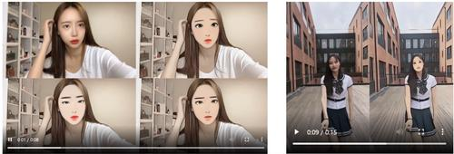
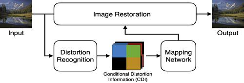
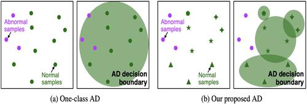
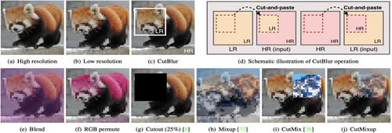
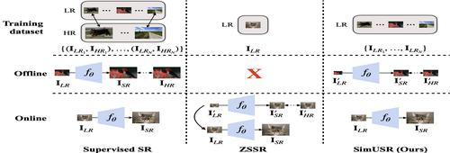
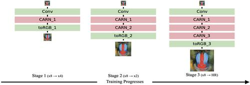
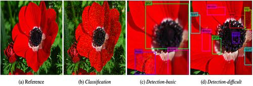

|
AI Researcher at NAVER WEBTOON Corp. |
I am an AI researcher in the W AI Creation team at NAVER WEBTOON. My research topics span the area of computer vision. I obtained a Ph.D. at Ajou University, advised by Prof. Kyung-Ah Sohn. Throughout that time, I had mostly involved in projects of image enhancement or restoration tasks, such as image super-resolution. Currently, I am interested in generating, translating, or manipulating images with user-guided information, hoping to make a user-friendly content creation tool.
Publication
|  |
Cross-Domain Style Mixing for Face Cartoonization Seungkwon Kim, Chaeheon Gwak, Dohyun Kim, Kwangho Lee, Jihye Back, Namhyuk Ahn*, and Daesik Kim* (* indicates equal contribution) AICC workshop @ CVPR 2022. [arXiv] [Project] |
|  |
Exploiting Distortion Information for Multi-degraded Image Restoration Wooksu Shin, Namhyuk Ahn, Jeong-Hyeon Moon, and Kyung-Ah Sohn NTIRE workshop @ CVPR 2022. [arXiv] |
|  |
What is Wrong with One-Class Anomaly Detection? JuneKyu Park, Jeong-Hyeon Moon, Namhyuk Ahn, and Kyung-Ah Sohn AISecure workshop @ ICLR 2021. [arXiv] [Github] |

|
Restoring Spatially-Heterogeneous Distortions using Mixture of Experts Network Sijin Kim*, Namhyuk Ahn*, and Kyung-Ah Sohn (* indicates equal contribution) ACCV 2020. [arXiv] [Video] |
|  |
Rethinking Data Augmentation for Image Super-resolution: A Comprehensive Analysis and a New Strategy Jaejun Yoo*, Namhyuk Ahn*, and Kyung-Ah Sohn (* indicates equal contribution) CVPR 2020. [arXiv] [Github] [Video] |
|  |
SimUSR: A Simple but Strong Baseline for Unsupervised Image Super-resolution Namhyuk Ahn*, Jaejun Yoo*, and Kyung-Ah Sohn (* indicates equal contribution) NTIRE workshop @ CVPR 2020. [arXiv] [Video] |
|
Fast, Accurate, and Lightweight Super-Resolution with Cascading Residual Network Namhyuk Ahn, Byungkon Kang, and Kyung-Ah Sohn ECCV 2018. Pattern Recognition, 2022 (IF=7.740). [arXiv] [Extended ver.] [Github] |
|
|  |
Image Super-resolution via Progressive Cascading Residual Network Namhyuk Ahn, Byungkon Kang, and Kyung-Ah Sohn NTIRE workshop @ CVPR 2018. [Paper] [Github] |
|  |
Image Distortion Detection using Convolutional Neural Network Namhyuk Ahn, Byungkon Kang, and Kyung-Ah Sohn ACPR 2017. [arXiv] |
Work Experience
- AI Researcher, NAVER WEBTOON Corp. (Aug. 2021 ~ Present)
- Visiting Researcher, Clova AI Research, NAVER Corp. (Sep. 2019 ~ Oct. 2020)
Mentor: Dr. Jaejun Yoo, Dr. Youngjung Uh and Yunjey Choi - Intern, Clova AI, NAVER Corp. (June 2018 ~ Aug. 2018)
Mentor: Kwangjin Oh
Education
- Ph.D. in Artifical Intelligence at Ajou University (Mar. 2016 ~ Aug. 2021)
Advisor: Prof. Kyung-Ah Sohn
Thesis: Toward an Efficient Deep Image Restoration Method - Bachelor of Media in Digital Media from Ajou University (Mar. 2012 ~ Feb. 2016)
Award
- Honorable Mention Award, NTIRE 2018 Challenge (June 2018)
Single image super-resolution challenge (Track 1: Classic Bicubic) on NTIRE workshop @ CVPR 2018.
Teaching
- Lecture Instructor, Fastcampus (Aug. 2017)
lecture material (korean).
Academic Activitiy
- Reviewer
Journal: TPAMI, TIP, TMM, TCVST, Signal Processing: Image Communication
Workshops: NTIRE (@ CVPR 2022)